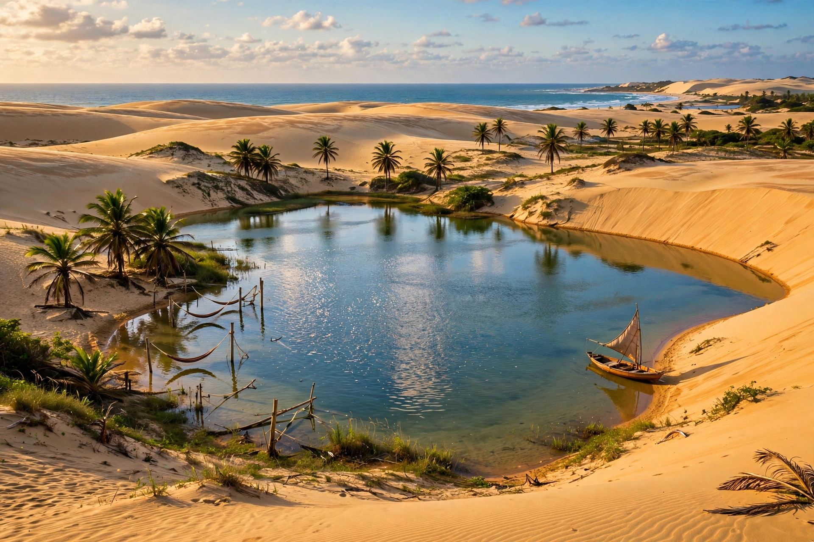

| Ceará | |
 | |
| Country | Brazil |
|---|---|
| Capital | Fortaleza |
| Area | 148,894 km² |
| Population | about 8.8 million |
| Region | Northeast |
Ceará is a state in northeastern Brazil, bordered by the Atlantic Ocean to the north, Rio Grande do Norte and Paraíba to the east, Pernambuco to the south, and Piauí to the west. Its capital, Fortaleza, is one of Brazil's largest cities.
The state is dominated by the semi-arid sertão, subject to periodic severe droughts that have driven historic migrations. Its coast of dunes, cliffs and beaches includes the fishing village of Jericoacoara, now a national park and famous windsurfing and kitesurfing destination.
Colonised by the Portuguese from the early 17th century after earlier French incursions, Ceará was subordinated to Pernambuco until 1799. In 1884 it became the first Brazilian province to abolish slavery, four years before national abolition, earning it the nickname "Terra da Luz" (Land of Light).
Ceará is known for its lace-making, hammocks, cashew nuts, and the comic tradition of Brazilian humour. Padre Cícero, the charismatic priest of Juazeiro do Norte, remains a focus of popular devotion. Tourism, footwear, textiles and a growing wind-energy sector drive the economy.